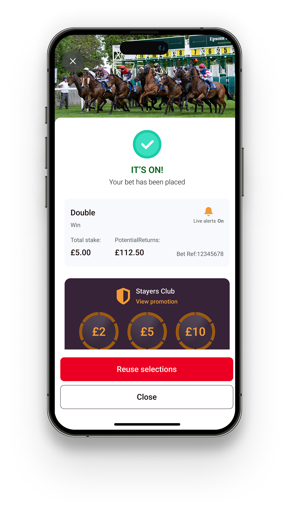
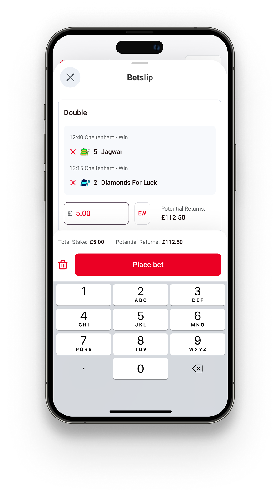
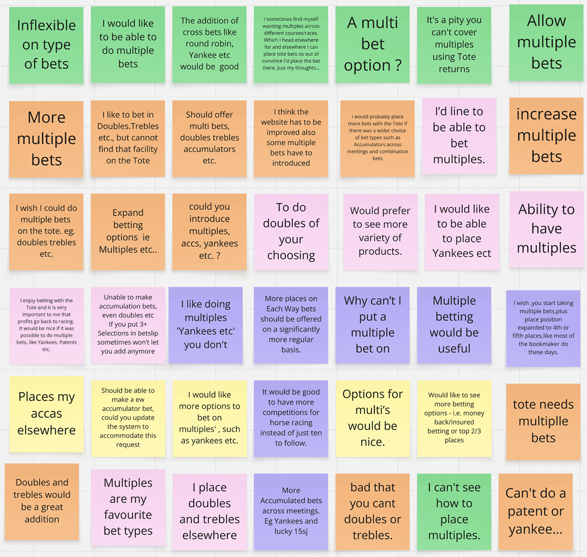
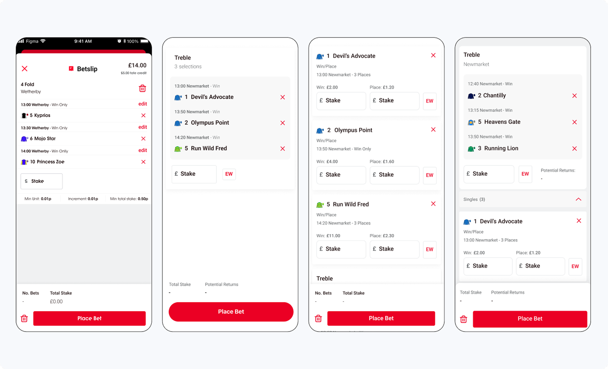
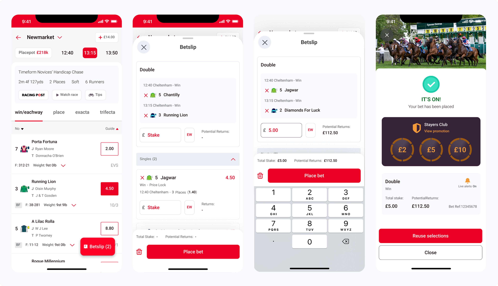

Multiples
Solving the need of allowing customers to combine multiple win bets into a single bet has generated over £4M turnover and 55% of customers saying they will bet on multiples 'regularly'.
- Identified the problem through surveys and benchmarking current KPIs.
- Conducted 10 user interviews with existing customers.
- Redesigned the betslip experience.
- Collaborated closely with PM and engineer to navigate technical limitations and delivery plans.
- Engaged with developers to improve the design handover experience, increasing the accuracy of the build compared to designs.
The Problem
"I like betting on doubles and trebles, but i can't find that function on the tote"
In quarterly surveys, one of the biggest obstacles that customers stated to betting with the tote was that we didn't offer multiples (trebles, 4folds, etc.).
This is because pools betting does not show the combined price so customers can't see their returns increasing – a significant factor to their popularity. This project would be a world first in pools betting.
Goals & Success Metrics
Research & Discovery

- Quarterly surveys identified how not having multiples meant customers were going elsewhere to place those bets.
- Competitor analysis showed that there was an emphasis on the importance of multiples as they were often above the fold on the horse racing homepages. Furthermore, the betslip would show a multiple bet rather than a collection of singles.
- User journey maps and personas were created to communicate to stakeholders the significance of the pain point and it's impact on revenue and retention.
- I conducted interviews with 10 participants that included a task with the current experience. I created a 'Tote Bet Club', a verified group of engaged and verified customers that are open to taking part in interviews.
Insights
Desire For Larger Returns
"If you can combine some of the outsiders on the Tote, your returns could be massive for a small stake".
One of the main goals for customers placing multiples is so they can combine several of there selections and increase their total returns, as the combination pays out more than if the bets were placed separately.
Customers Need To See The Returns For Their Bet
"If you want me to bet with you instead of 365, you have to show potential returns, i'm all about value"
One of the main motivators for customers playing the Tote if the prospect of winning a lot from a small stake.
Simplifying The Betslip
"There's too much going on in the betslip, it's confusing".
Adding multiple selections to a betslip can meet the criteria for different bet types, a customer will decide which bet type they want to place at this point, so it is important that it is clear which stake box refers to which bet type.
Exploration

Existing components had several issues, such as lack of common region for the selections, too many exit points, and license of the typography expiring.
I moved towards displaying each bet in a card format to compartmentalise the relevant information.
Competitor research helped inform the decision for the order of the betslip, with the multiple being top.
Research showed that telling customers the return for their bet is the biggest motivator for placing multiples, however the Totes return value can change dependent on the market. Therefore we used the term 'Potential returns' and tested it with customers.
Feedback included: "Potential lets you know it's not guaranteed"
User Journey

Key design decisions
- Potential Returns – There was hesitation with stakeholders about displaying a returns value as customers may be frustrated when their returns are less than the value shown at bet placement. The research I presented convinced them that customers needed to see that value as a motivator for placing that bet. The term 'potential' was tested and customers gave the feedback that they knew that return value was not guaranteed.
- Card Layout – The redesign had to consider a scaling betslip, as the changes would be universal. Using cards made it easier for customers to see which information was related to each other, so there would be limited confusion when several bets are displayed in their betslip. This is because the relevant information for each bet would have a shared common region.
- Font – The license for the previous font had expired, so I chose a google font based on the low cost and accessibility on digital platforms. I liaised with the marketing and branding departments to ensure we were all aligned on this decision.
Results & Impact
The UK tote is the only place in the world where you can combine several win bets into a single 'multiple', including tote products on bookmakers and international totes such as TAB (Australia) and PMU (France). The redesign of the betslip solved the cognitive overload from the previous layout, whilst introducing a potential returns value which is in itself an innovation in pools betting.
£4M
Yearly Turnover
Meeting budget expectations
55%
'Likely' to bet regularly
Quarterly survey findings
World First
Pools betting innovation
Reflections and Learnings
Agile Delivery
The backend services were having to be rewritten, but it was important to get a product live and begin measuring data and creating revenue.
What I did:
- Broke up the designs into three separate pages, so developers could see clearly which design was related to which version.
- Used the UX research to inform what function should be MVP, also suggested that 'named bets' should be included in next released based off customer feedback.
What I learned:
- Building a strong relationship with the product manager and engineers meant we were all aligned when requirements changed due to backend resource. The designs were able to adapt quickly when the situations changed.
Design Consistency
The existing Design System was fragmented and inconsistent across different platform. Rebuilding the components from scratch created the opportunity to build a library that other designers could use and decrease design time whilst improving consistency.
What I did:
- Consolidated the design system into one file.
- Learnt from industry standard design systems with how to layout the file as well as reducing the amount of variations.
What I learned:
- Developers did not naturally adopt the design system, I hosted several sessions walking them through the files and saying that this is where the source of truth for each component and their variations will be housed.
Next Steps
"I would like to bet on multiples across different meetings"
In the first implementation, betting across different meetings functionality was not enabled as a limitation of how the backend systems were set up.
This feedback has been included in the problem statements that may be solved through the 'Lock In Your Price' initiative.
The 'Floating Action Button', that is the CTA for customers to access their betslip was initially chosen as it was a library component in Material Design, so there was less development needed.
The limitation of this component is that customers cannot (a) see their returns increase as they add more selections, and (b) adds an extra click to placing the bet as there is no quickbet functionality.